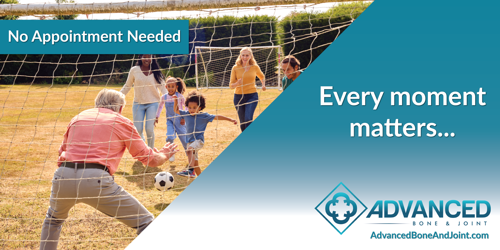
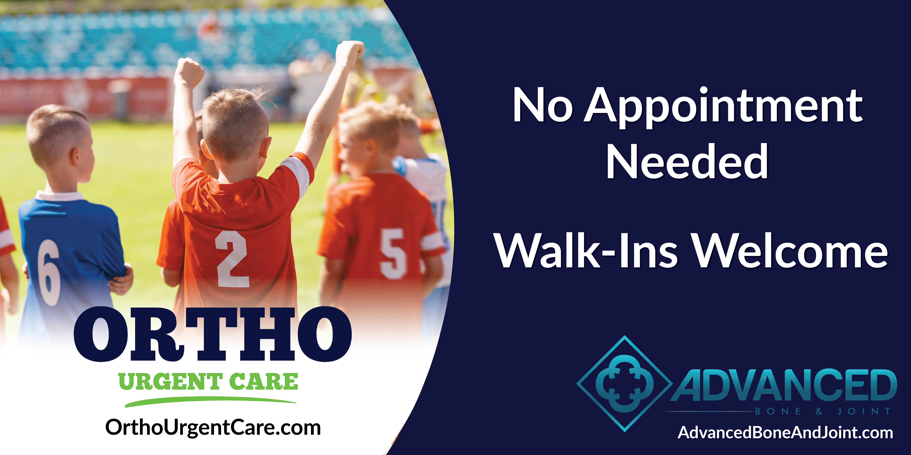
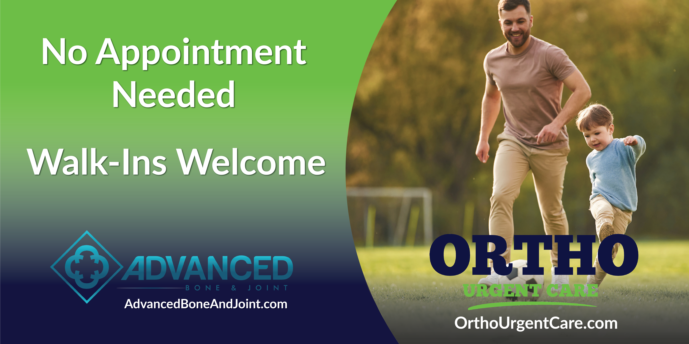


Ortho Urgent Care/Advanced Bone & Joint

Overview
Ortho Urgent Care and Advanced Bone & Joint are healthcare organizations providing specialized orthopedic and urgent care services. In this freelance project, I was commissioned to create five large-format advertisements for print and outdoor signage.
The project required developing multiple designs that incorporated existing brand elements, website information, photography, and service messaging while adapting each layout to its specific dimensions and audience.
Role
I was responsible for the design and production of advertising materials. The specific roles included:
The Challenge
The project required five signs with different dimensions, locations, and messaging requirements. Four signs were created for a local soccer facility, including two focused specifically on Ortho Urgent Care and two promoting Advanced Bone and Joint more broadly. A fifth, larger-format sign was designed for a youth hockey facility with a specific focus on Advanced Bone and Joint.
Each design needed to communicate the appropriate services while incorporating required logos, website information, and supporting imagery. The layouts also needed to remain clear and visually effective at a large physical scale.
The Process and Tools
Ad Development
I developed the advertisements based on the client's specifications, adapting the visual layout and messaging to each sign's unique dimensions and intended audience. The designs incorporated sports-related imagery to connect the orthopedic services with teh active communities being reached, including soccer and youth hockey.
The project included multiple variations for the soccer facility, allowing the designs to promote both Ortho Urgent Care and the broader Advanced Bone and Joint brand while maintaining a consistent visual identity across the campaign.
Final Designs
The final project included five large-format advertisements prepared for print:
Each design incorporated the required branding, website information, and sport-specific imagery while being adapted to its individual format.





The Final Outcome
The completed project delivered five print-ready large-format advertisements tailored to different sports facilities and target audiences. The designs extended Advanced Bone and Joint and Ortho Urgent Care's visual presence into local athletic environments while clearly communicating their services and brand information.
The project demonstrated my ability to work from detailed client specifications, adapt designs across large-format dimensions, and prepare professional artwork for physical production.